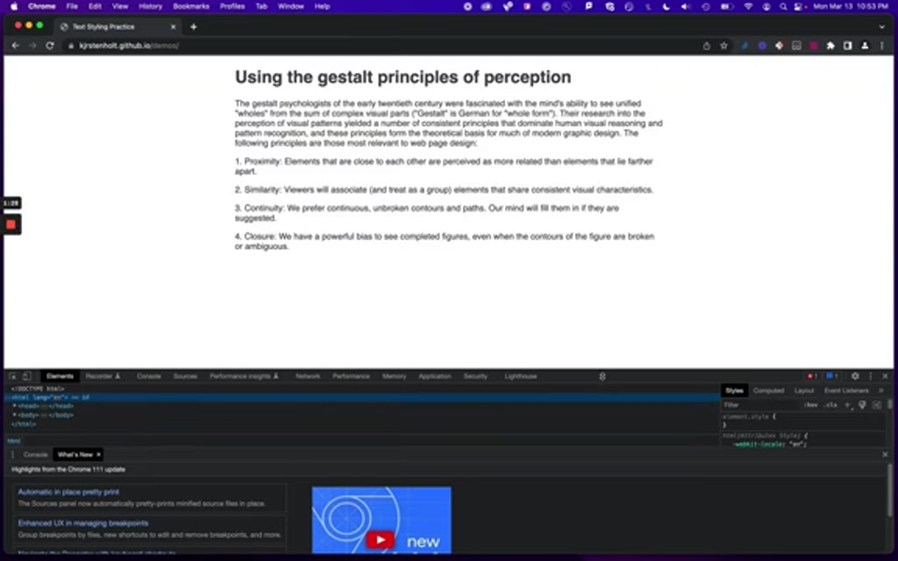
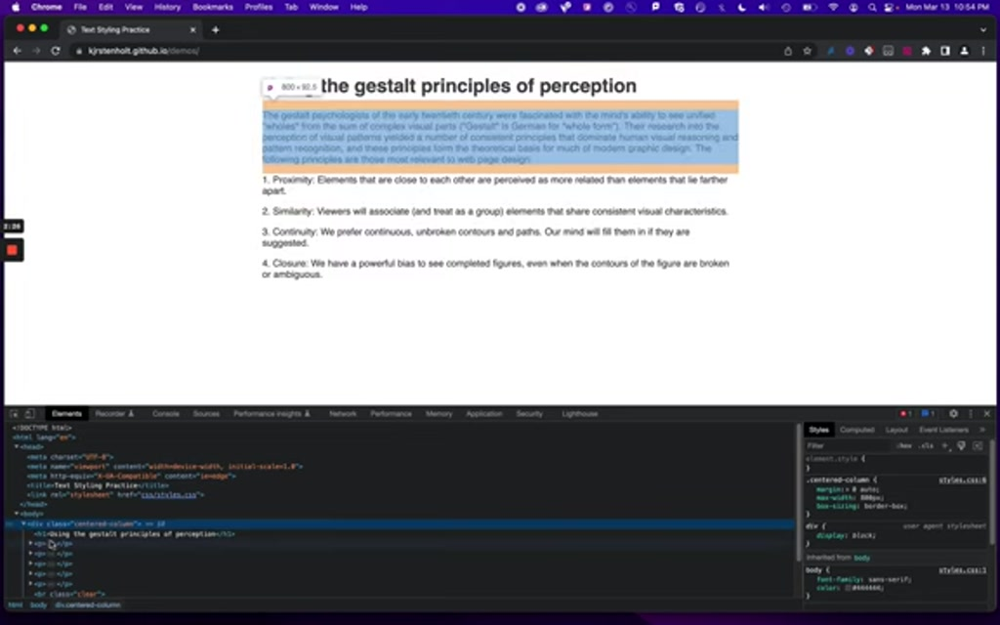
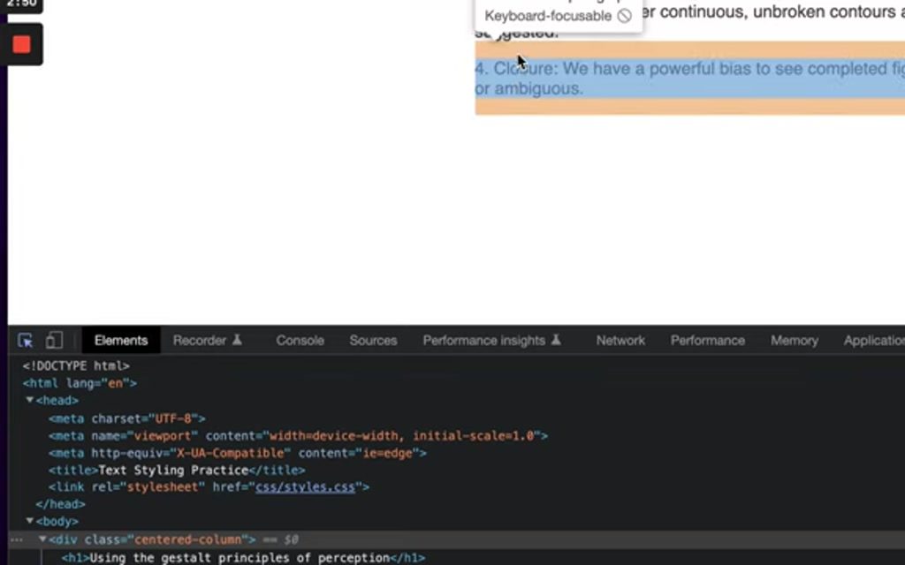
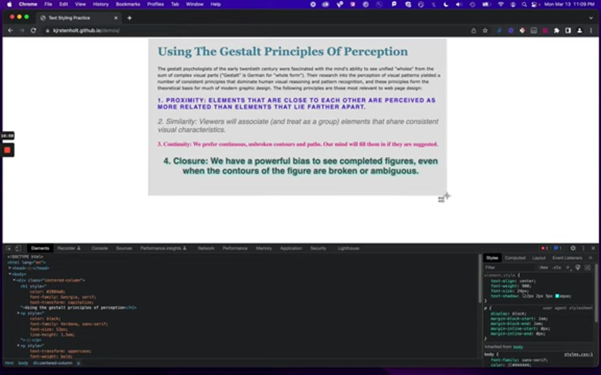

00:00:00.659
In this video we're going to go over the
CSS for type assignment for Web Design Fundamentals.
00:00:05.323
You'll need to navigate to this page: https://kjrstenholt.github.io/demos
I've got just a very simple web page with some text on it that we're going to change in the browser.
I've got just a very simple web page with some text on it that we're going to change in the browser.
00:00:19.980
We will take a look at the source of this page and make changes to its
appearance, and take some screenshots as we go.
00:00:24.840
So the first thing you're going to
do is open this URL:Google Chrome is the browser
that I'm using here and in order for you
to see exactly the same things that I'm
seeing, I suggest you do it in Chrome.

00:01:04.260
Next, we're going to inspect the page. There's a
few ways you can do that – you can do 'command alt I' if you're into keyboard
shortcuts, and that will bring up the
inspector.
00:01:20.640
You can also open the inspector by doing a "right click" on your mouse, and choosing "Inspect" from the menu.

00:01:28.259
That opens up this window on the bottom (you might see it over to the side, or on the bottom depending on how your
browser window is set up).
00:01:39.720
If you're seeing the "Console," or "What's New," you can
just hit the X right over here (on the right side of those tabs)
and close that because we want to see
what's on top here.
00:01:55.680
So what I want to see is this. This is
the code that creates my text.
00:02:03.659
It is the HTML code that I'm hovering
over right now, there's a few
parts to it and if you're in the course, "HTML 1." this will look very familiar to you.
00:02:13.020
If it doesn't look familiar don't worry! We're just going to be doing some CSS
styling with it.
00:02:19.800
if I click open the body tag and open this div tag (a 'div' is like
a division or a rectangle in a web page)...

00:02:26.459
Then I can get to where I'm seeing the highlighted text
here.
00:02:31.140
Another way you can you can zero
in on particular pieces, is to use this
selection tool. Over on the very far
left (in the inspector area) there's a little box with an arrow icon.
00:02:45.180
If you click on that, then you can highlight...

00:02:51.000
...different parts of the page as you roll
over them.
and so so I've
selected the headline H1 is is a
00:03:02.879
I'm going to start with the headline and move my way down. The CSS styles are listed in the inspector panel on the right side.
00:03:06.440
For each
piece of this text I'm going to change
the appearance (in the browser only) and take screenshots of the changes as I go along.
00:03:15.780
At the top of that styles box, where it says 'element.style' – that's where you can give local
styles to each piece.
00:03:38.459
Make sure that you have the headline selected, as you see above.
00:04:00.900
Click on 'element.style'
and type in...
00:04:26.160
...type in "color:" – There are a bunch of named colors, and you can also
use "hex codes" (which look like #F1F1F1, for example) to to change the colors.
00:04:32.520
So I'm going to use the color code here, #2884A8.
The css code should look like this:
element.style {
color: #2884A8
}
The css code should look like this:
element.style {
color: #2884A8
}

00:04:54.060
The headline color is now changed!
00:04:57.479
Here's a closer look at the CSS.
CONTINUE to follow the directions in the assignment to make changes in the styles for all of the text. Take a screenshot of the CSS that you write for each section of text. This will be part of what you hand in.
When you have finished making all of the changes, continue to the instructions below for the final screenshot.
00:16:54.180
When you are finished, take a screenshot of the whole text area...

00:16:58.730
...on a Mac, you can use the keyboard and press Command Shift 4 to get a selector to make the screenshot.

00:18:44.760
So you can see that I've captured all
those changes that I made and this is
what I'm going to turn in to show that
that I did the assignment
all right.